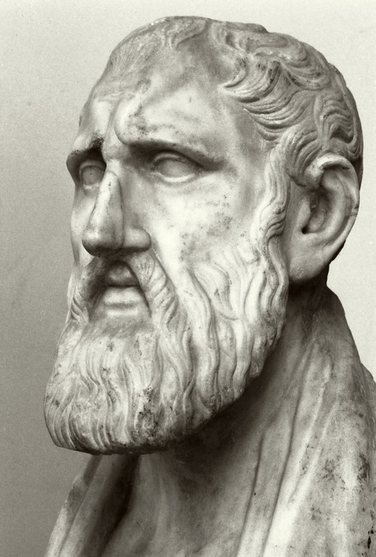

基提翁的芝诺是斯多葛学派的创始人——一位在雅典"彩绘柱廊"下讲学的腓尼基商人。他把犬儒的坚忍、苏格拉底的理性与赫拉克利特的火熔铸成一个体系：宇宙是有秩序的整体，人唯有依从理性、依从自然而活，才能获得真正的自由。他没有留下完整著作，却留下了一个延续五百年的学派。
斯多葛哲学是一个"有机体"：逻辑学是骨架，物理学是血肉，伦理学是灵魂。芝诺奠定的是根本的方向——理性、自然、德性三者合一。以下六个概念构成他的思想骨架，从"依自然"出发，经德性、理性、宇宙，最后落到智者形象。点击卡片进入详细解读。
斯多葛的第一原则：依照自然而生活。自然不是荒野，而是宇宙的理性秩序——依自然即是依理性。
德性是唯一的善，幸福就是德性的生活。财富、健康、名声都"不关善"——它们本身既非善也非恶。
宇宙中有一种贯穿万物的理性之火。人的理性是宇宙理性的火花——"人"正因理性而与神同族。
不是消灭情绪，而是消除"错乱的情绪"——愤怒、恐惧、贪欲。智者不被动摇，是因为"看见了真"。
宇宙是神意安排的有机整体，一切皆有缘由。顺应命运不是听天由命，而是"与必然和解"。
斯多葛的理想人格：全然理性、自由、不可伤害的"智者"。他们像神一样活着——尽管"智者难遇"。
芝诺本人没有留下完整的著作——他的文本只剩残篇，散存于后世文献。以下五部"作品"涵盖其思想框架：三部残篇类作品（物理学、伦理学、逻辑学）与两部最重要的转述/编纂（第欧根尼·拉尔修与《斯多葛残篇汇编》）。
斯多葛宇宙论的基础文本：理性之火、宇宙秩序、周期性的"大火"。只有残篇传世。
论德性、幸福与依自然。与《论自然》合成斯多葛"物理学—伦理学"的基础骨架。
斯多葛逻辑的源头：范畴、命题与推理的雏形。芝诺为"三足鼎立"的学科打地基。
保存芝诺生平与学说的最重要文献：从船难到柱廊，从残篇到系统概述。
把散佚千年的斯多葛残篇（含芝诺）汇集成册，是现代研究斯多葛哲学的"考古现场"。
芝诺的原稿太碎。建议先读爱比克泰德《手册》或塞涅卡的书信——它们把芝诺的骨架变成可执行的日常练习，然后再回头读芝诺残篇。
这是芝诺资料最集中的单篇文献。一边读生平，一边划出残篇引用，芝诺哲学的"三个学科"轮廓就会清晰起来。
读《斯多葛残篇汇编》中芝诺部分（SVF I），对照当代导读（如朗格《斯多葛哲学》）和塞涅卡、马可·奥勒留的斯多葛实践。此时你已能"复原"芝诺的思想。
本站是斯多葛学派创始人芝诺的导读，共五页。核心概念页展开"依自然""德性""理性""不动心""宇宙"与"智者"六个关键词；著作页以残篇与后世文献为主线；生平页追叙从塞浦路斯商人到雅典柱廊教师的一生；名言页则收集芝诺最有力量的话，并附术语表与阅读路径。
请注意：本站的"芝诺"是基提翁的芝诺（Zeno of Citium）——斯多葛学派创始人，而不是提出"芝诺悖论"的埃利亚的芝诺。前者的遗产是一座学派，后者是四个悖论。读斯多葛，从前者开始。